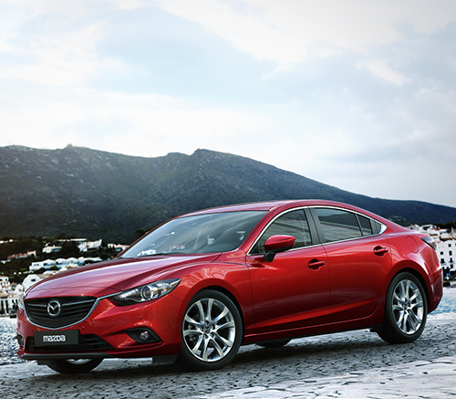

Mazda Motor Corporation (яп. マツダ株式会社 мацуда кабусики-гайся), кратко: Mazda (рус. «Ма́зда»[2]) — японская автомобилестроительная компания, выпускающая автомобили «Мазда». Штаб-квартира расположена в посёлке Футю, уезд Аки, префектура Хиросима, Япония. Входит в кэйрэцу Sumitomo. В 2015 году стала пятнадцатым автопроизводителем в мире по объёму производства автомобилей. Mazda 6 является «большим семейным автомобилем» (или D-классом), который принято считать «одним из самых важных» машин для японской компании Mazda Motor Corporation. Также это «флагман» японцев. Интересно, что модель стала первым «носителем» дизайнерской концепции «Zoom-Zoom». Всего было выпущено 3 поколения. Последнее поколение представили во время Московского международного автомобильного шоу в августе 2012-го. Уже в 2014 году японцы решили обновить свой автомобиль.
Mitsubishi Lancer (яп. 三菱・ランサー) — семейство автомобилей, выпускаемых Mitsubishi Motors с 1973 года по 2018 год. Mitsubishi Lancer является семейством моделей «среднего малого класса» (или ниша «С» по европейским стандартам), которая представляется в 2-х вариантах исполнения: 4-дверный седан, а также 5-дверный хэтчбек. Машина оснащена агрессивным дизайном, удобным салоном, надежной технической начинкой, хорошими «ездовыми» повадками. Японская машина ориентирована изначально на молодых покупателей, однако на практике очень распространена у людей разного пола и возраста.